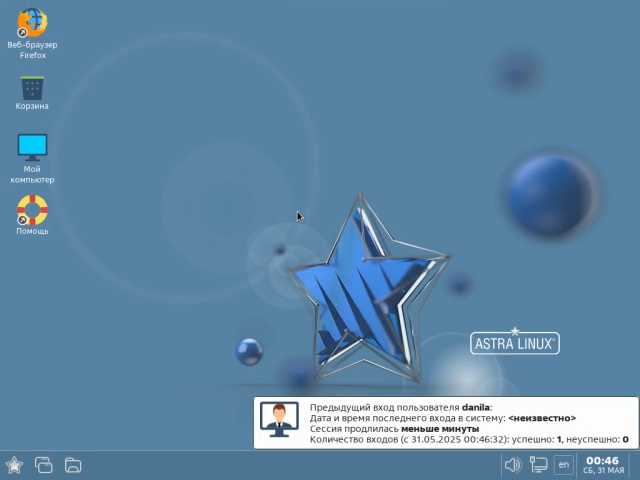

Начало #
Добро пожаловать в курс Использование отечественного и свободного программного обеспечения!
Этот курс разбит на несколько модулей, каждый из которых посвящён той или иной отечественной или свободной программе.
Каждый модуль включает в себя:
- теоретический блок, в котором Вы можете найти информацию об установке и применении программы, которой посвящён модуль;
- небольшой тест, направленный на проверку и закрепление полученных знаний;
- анкетирование, в котором Вы можете оценить качество представленных в модуле материалов.
Входное анкетирование #
Перед началом прохождения курса, пожалуйста, пройдите входное анкетирование. Это поможет нам узнать, насколько Вы знакомы с отечественным и свободным ПО.
Установка операционных систем #
Данный раздел посвящён установке отечественных операционных систем.
Astra Linux SE 1.7 #
Модуль посвящён установке операционной системы Astra Linux Special Edition 1.7

Astra Linux SE 1.8 #
Модуль посвящён установке операционной системы Astra Linux Special Edition 1.8
Настройка операционных систем #
Данный раздел посвящён настройке элементов операционных систем
Предварительная настройка пакетного менеджера Synaptic #
Модуль посвящён предварительной настройке пакетного менеджера Synaptic для последующей установки пакетов
Установка программ #
Яндекс Браузер #
Модуль посвящён установке Яндекс Браузера
Офисный пакет ONLYOFFICE #
Модуль посвящён установке офисного пакета ONLYOFFICE
Офисный пакет Р7-Офис #
Модуль посвящён установке офисного пакета Р7-Офис
Редактор кода IDLE #
Модуль посвящён установке редактора кода IDLE
Интерактивная среда разработки OpenIDE #
Модуль посвящён установке интерактивной среды разработки OpenIDE
Интерактивная среда разработки PyCharm #
Модуль посвящён установке интерактивной среды разработки PyCharm
Редактор кода VSCodium #
Модуль посвящён установке редактора кода VSCodium
Редактор кода Visual Studio Code #
Модуль посвящён установке редактора кода Visual Studio Code
Интерактивная среда разработки КуМир #
Модуль посвящён установке интерактивной среды разработки КуМир